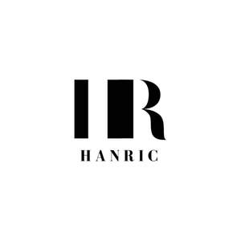

Trade Mark Journal No.2025/044 31 October 2025
UK00004282022 22 October 2025 (16,35,37,39,40,41,42,43,45)

- Class 16
- Hotel directories.
- Class 35
- Business management of resort hotels; Hotel management for others; Administrative hotel management; Hotel management service [for others]; Business management of hotels; Hotels (Business management of -); Business management of car parking facilities; Providing hotel rate comparison information; Business management of hotels for others.
- Class 37
- Cleaning of hotels; Construction of holiday accommodation; Apartment refurbishment services.
- Class 39
- Booking of airport parking; Arrangement of travel to and from hotels; Airport passenger shuttle services between the airport parking facilities and the airport; Tourist travel reservation services; Arranging and booking of city sightseeing tours; Airport check-in services; Travel reservation and booking services; Travel and tour ticket reservation service; Booking of travel through tourist offices; Rental car reservation; Reservation and booking of seats for travel; Reservation services for airline travel; Reservation services for booking seats [travel]; Seat reservation services for travellers; Airport parking services; Airport passenger check-in services; Booking and reservation services for tours; Airline ticket reservation services.
- Class 40
- Food and beverage treatment.
- Class 41
- Provision of entertainment facilities in hotels; Casino facilities; Rental of stadium facilities; Stadium facilities (Rental of -); Booking of entertainment halls; Booking agency service for cinema tickets; Booking of sports facilities; Ticket reservation and booking services for theater shows; Ticket reservation and booking services for recreational and leisure events; Corporate hospitality (entertainment); Hospitality services (entertainment); Education services provided by holiday resort establishments; Provision of training in the field of hygiene for the catering industry; Education services provided by tourist resort establishments; Training relating to the restaurant industry; Corporate entertainment services; Rental services relating to equipment and facilities for education, entertainment, sports and culture; Entertainment services provided by hotels; Wine tastings [entertainment services]; Providing facilities for entertainment; Providing education courses relating to the travel industry; Entertainment booking services; Wine tasting services (education); Camp services (Holiday -) [entertainment]; Holiday camp services [entertainment]; Holiday centre entertainment services.
- Class 42
- Design of hotels; Interior design services for the retail industry; Services for the planning [design] of catering establishments; Professional consultancy relating to the design of interior accommodation.
- Class 43
- Reservation of hotel accommodation; Booking of hotel accommodation; Booking of hotel rooms for travellers; Hotel reservations; Hotel restaurant services; Hotel room booking services; Resort hotel services; Hotel services; Hotel accommodation services; Hotel accommodation reservation services; Hotel reservation services; Appraisal of hotel accommodation; Arranging of hotel accommodation; Arranging hotel accommodation; Providing hotel and motel services; Providing hotel accommodation; Hotel information; Reservation of accommodation in hotels; Provision of hotel accommodation; Resort hotels; Booking agency services for hotel accommodation; Agency services for booking hotel accommodation; Providing room reservation and hotel reservation services; Pet hotel services; Hotel catering services; Travel agency services for reserving hotel accommodation; Hotels and motels; Booking of campground accommodation; Providing accommodation in hotels and motels; Hotels, hostels and boarding houses, holiday and tourist accommodation; Reservation of rooms for travellers; Guesthouse; Booking services for hotels; Reservation of tourist accommodation; Accommodation bureau services [hotels, boarding houses]; Rental of towels for hotels; Rental of curtains for hotels; Rental of conference rooms; Accommodation bureaux [hotels, boarding houses]; Rental of rooms; Travel agency services for making hotel reservations; Room booking; Booking of restaurant seats; Motel services; Rental of furniture for hotels; Rental of meeting rooms; Hotel services for preferred customers; Booking of accommodation for travellers; Restaurant reservation services; Restaurant services provided by hotels; Resort lodging services; Hotel reservation services provided via the Internet; Room reservation services; Rental of floor coverings for hotels; Tourist agency services for booking accommodation; Reservation services for the booking of accommodation; Making hotel reservations for others; Accommodation reservations; Providing exhibition facilities in hotels; Consultancy services relating to hotel facilities; Rental of rooms as temporary living accommodations; Reservation and booking services for restaurants and meals; Booking services for holiday accommodation; Reservation services for accommodation; Accommodation reservation services; Rental of vacation accommodation; Reservation of restaurants; Booking services for accommodation; Booking agency services for holiday accommodation; Tourist camp services [accommodation]; Restaurant services; Arranging of meals in hotels; Travel agency services for booking accommodation; Holiday lodgings; Rating holiday accommodation; Rental of holiday accommodation; Travel agency services for booking restaurants; Booking of temporary accommodation; Tour operator services for the booking of temporary accommodation; Airport lounge services; Tourist hostels; Bar and restaurant services; Restaurant and bar services; Boarding house bookings; Reservation of temporary accommodation; Rental of wall hangings for hotels; Booking and arranging of access to airport lounges; Providing conference rooms; Rental of portable dressing rooms; Room rental for exhibitions; Hospitality services [accommodation]; Agency services for reservation of restaurants; Travel agency services for booking temporary accommodation; Motels; Reservation services for booking meals; Carvery restaurant services; Temporary accommodation reservation services; Services for reserving holiday accommodation; Agency services for the reservation of temporary accommodation; Accommodation booking agency services [time share]; Catering services for providing European-style cuisine; Providing food and drink for guests in restaurants; Food and drink catering for banquets; Catering for the provision of food and beverages; Catering services for providing Spanish cuisine; Providing food and drink catering services for fair and exhibition facilities; Food and drink catering for institutions; Charitable services, namely providing food and drink catering; Catering services for the provision of food and drink; Providing food and drink for guests; Catering of food and drinks; Catering services for providing Japanese cuisine; Serving food and drink for guests in restaurants; Catering for the provision of food and drink; Food and drink catering; Catering of food and drink; Catering (Food and drink -); Providing temporary lodging for guests; Business catering services; Serving food and drink for guests; Camp services (Holiday -) [lodging]; Washoku restaurant services; Holiday camp services [lodging]; Providing travel lodging information services and travel lodging booking agency services for travelers; Services for providing food and drink; Services for the preparation of food and drink; Food and drink preparation services; Holiday accommodation services; Providing restaurant services; Consulting services in the field of culinary arts; Providing food and beverages; Restaurant services for the provision of fast food; Catering services for nursing homes; Provision of food and drink in restaurants; Office catering services for the provision of coffee; Catering services for educational establishments; Accommodation services; Services for providing food; Food preparation services; Catering services; Wine tasting services (provision of beverages); Services for the provision of food and drink; Self-service restaurant services; Holiday planning services [accommodation]; Catering; Providing food and drink in bistros; Take-away food and drink services; Provision of food and beverages; Catering services for hospitals; Catering services for company cafeterias; Banqueting services; Reception services for temporary accommodation [management of arrivals and departures].
- Class 45
- Hotel concierge services.
haninder kanwar sachdeva